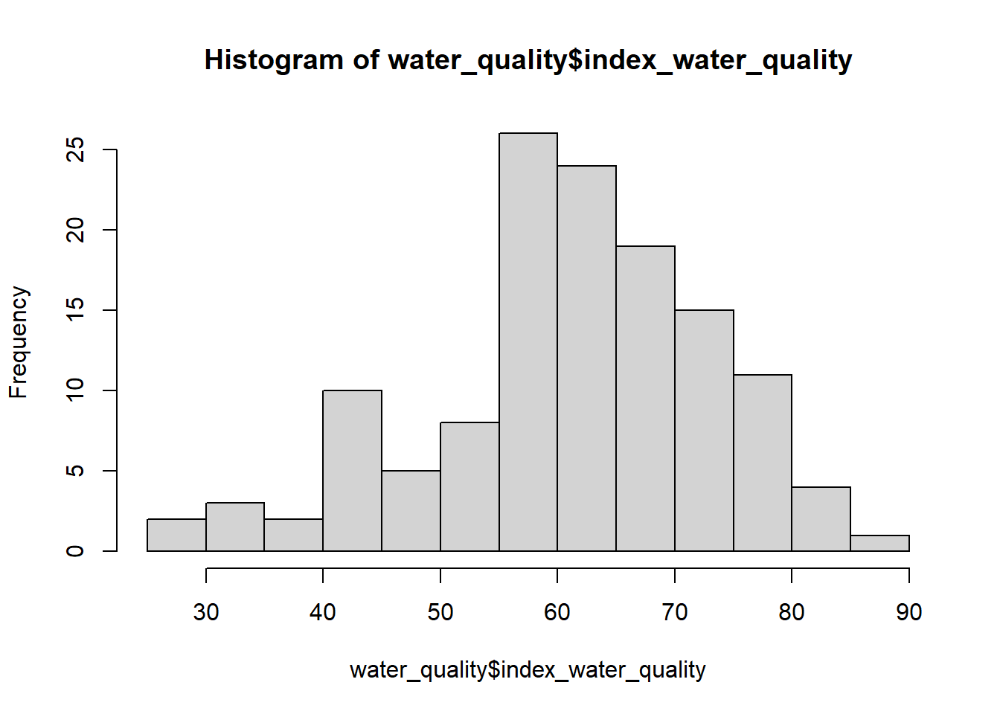
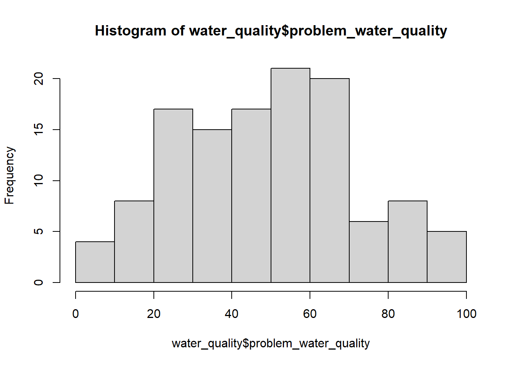

12 Online Data
Data we have been analyzing in the class so far has been in a .csv format and mostly ready for analysis. But it won’t always be so easy to access…
In this worksheet, we will:
- Explore different sources to find datasets
- Scrape data from the web “manually” and with code
- Import datasets with a different format
- Export datasets manipulated in R into csv files
12.1 Online data resource
Datasets posted online are sometimes easy to access and download but always look for a data dictionary or documentation to help you make sense of the variables.
12.1.1 Data portal
Let’s retrieve data from the City of Austin Open Data Portal about the quality of the water in Austin. Search for Data with the keywords watershed scores. Then we can import the dataset directly to RStudio with API endpoint:
12.1.1.1 Try it! Represent the distribution of index_water_quality and problem_water_quality separately. What is the difference between these two variables?


Different way to assess water quality on different scales (100 is best or worst).
Be aware that if you get data directly from the web like that it might:
- No longer be available at some point.
- Be updated.
It might be a better idea to export and save the file locally.
12.1.2 Downloading datasets
Only download files from trusted websites! To assess whether a website can be trusted or not, consider the following factors:
- Check the source of the website: Websites of universities, government agencies, or well-known platforms (e.g., GitHub, Kaggle, and Data.gov…).
- Look for HTTPS and security
- Examine the quality of the website: Trustworthy websites often look polished and contain clearly written content, whereas scam sites may look poorly designed or filled with ads.
Also be aware that the dataset you download might not be in a usable format in R! See section 3.
12.1.3 Websites with special permissions
Other times, you’ll need approval to access the file, like here.
Depending on the source, before you can get the data you might need to:
- Explain your purpose for using the data.
- Explain what security measures you will follow to protect the data.
- Get IRB (Instructional Review Board) approval before collecting data.
- Sign a data use agreement.
- Pay money.
Refer to the Data Resources page for a list of common data resources.
12.2 Web scraping
12.2.1 Manually from the web
If the data you want isn’t already compiled in a file, you will need to pull the information yourself. Sometimes, it’s as easy as a “manual scrape”, and simply copy/paste the values into Excel. This is not always perfect but usually follow these steps:
Step 1: Select the data you want with your mouse and copy it.
Step 2: Open a blank Excel or Google Sheets file. Paste the selection into your file.
Step 3: Go to (Excel) File>Save As>Name it and choose the .csv format from the dropdown; or (Sheets) Name your file, then go to File>Download>csv
12.2.1.1 Try it! Manually scrape the state table describing the legal abortion limits by state. Create a .csv file and read it into R. Find in how many states abortion is banned.
# Write and submit code here!
wikipedia <- read_csv("wikipedia.csv")
table(wikipedia$`Waiting period`)##
## N/A; abortion is banned here. No
## 13 2
## No [240] No[238]
## 1 1
## None Yes
## 24 9Some challenges: extra row when copy/pasting, variable names long and with special characters.
12.2.2 With code
There are many (paid) programs/software out there to scrape data from the web - some legal, some not. We will talk about scraping with code, for free with the rvest package. We can:
- Read HTML source code from a website.
- Break it into a nice structure.
- Extract the specific elements we want to analyze.
## Warning: package 'rvest' was built under R version 4.3.3Let’s work with a simple example first, the countries of the world and read the HTML content of this page in R:
## {html_document}
## <html lang="en">
## [1] <head>\n<meta http-equiv="Content-Type" content="text/html; ch ...
## [2] <body>\n <nav id="site-nav"><div class="container">\n ...
## [3] <script src="https://ajax.googleapis.com/ajax/libs/jquery/1.11 ...
## [4] <script src="https://maxcdn.bootstrapcdn.com/bootstrap/3.3.5/j ...
## [5] <script src="https://cdnjs.cloudflare.com/ajax/libs/pnotify/2. ...
## [6] <link href="https://cdnjs.cloudflare.com/ajax/libs/pnotify/2.1 ...
## [7] <script type="text/javascript">\n \n PNotify.prototype.o ...
## [8] <script type="text/javascript">\n $("video").hover(function ...
## [9] <script>\n (function(i,s,o,g,r,a,m){i['GoogleAnalyticsObjec ...
## [10] <script>\n !function(f,b,e,v,n,t,s){if(f.fbq)return;n=f.fbq=f ...
## [11] <noscript><img height="1" width="1" style="display:none" src=" ...
## [12] <script type="text/javascript">\n /* <![CDATA[ */\n var ...
## [13] <script type="text/javascript" src="//www.googleadservices.com ...
## [14] <noscript>\n <div style="display:inline;">\n <img height ...
## [15] <script async src="https://www.googletagmanager.com/gtag/js?id ...
## [16] <script>\n window.dataLayer = window.dataLayer || [];\n fu ...We can select some elements of this page. Without a deep knowledge of HMTL, we can use a simple tool to differentiate between all the different elements:
- Download Chrome’s Selector Gadget extension, which lets you easily identify the HTML “tag” for a pattern of elements that you want to scrape.
- Open the webpage you want to scrape from and click on the “Developer Tools”, the puzzle piece to the right of the address bar.
- Click on an element you want to scrape. If anything is highlighted yellow that you don’t want, click it to remove it from your selection.
Once you see the element tag in the bar at the bottom, we can now scrape those with code:
read_html("https://www.scrapethissite.com/pages/simple/") |>
html_elements(".country-name") |>
html_text(trim = TRUE)## [1] "Andorra"
## [2] "United Arab Emirates"
## [3] "Afghanistan"
## [4] "Antigua and Barbuda"
## [5] "Anguilla"
## [6] "Albania"
## [7] "Armenia"
## [8] "Angola"
## [9] "Antarctica"
## [10] "Argentina"
## [11] "American Samoa"
## [12] "Austria"
## [13] "Australia"
## [14] "Aruba"
## [15] "Åland"
## [16] "Azerbaijan"
## [17] "Bosnia and Herzegovina"
## [18] "Barbados"
## [19] "Bangladesh"
## [20] "Belgium"
## [21] "Burkina Faso"
## [22] "Bulgaria"
## [23] "Bahrain"
## [24] "Burundi"
## [25] "Benin"
## [26] "Saint Barthélemy"
## [27] "Bermuda"
## [28] "Brunei"
## [29] "Bolivia"
## [30] "Bonaire"
## [31] "Brazil"
## [32] "Bahamas"
## [33] "Bhutan"
## [34] "Bouvet Island"
## [35] "Botswana"
## [36] "Belarus"
## [37] "Belize"
## [38] "Canada"
## [39] "Cocos [Keeling] Islands"
## [40] "Democratic Republic of the Congo"
## [41] "Central African Republic"
## [42] "Republic of the Congo"
## [43] "Switzerland"
## [44] "Ivory Coast"
## [45] "Cook Islands"
## [46] "Chile"
## [47] "Cameroon"
## [48] "China"
## [49] "Colombia"
## [50] "Costa Rica"
## [ reached getOption("max.print") -- omitted 200 entries ]Similarly, let’s scrape the capitals:
read_html("https://www.scrapethissite.com/pages/simple/") |>
html_elements(".country-capital") |>
html_text(trim = TRUE)## [1] "Andorra la Vella" "Abu Dhabi" "Kabul"
## [4] "St. John's" "The Valley" "Tirana"
## [7] "Yerevan" "Luanda" "None"
## [10] "Buenos Aires" "Pago Pago" "Vienna"
## [13] "Canberra" "Oranjestad" "Mariehamn"
## [16] "Baku" "Sarajevo" "Bridgetown"
## [19] "Dhaka" "Brussels" "Ouagadougou"
## [22] "Sofia" "Manama" "Bujumbura"
## [25] "Porto-Novo" "Gustavia" "Hamilton"
## [28] "Bandar Seri Begawan" "Sucre" "Kralendijk"
## [31] "Brasília" "Nassau" "Thimphu"
## [34] "None" "Gaborone" "Minsk"
## [37] "Belmopan" "Ottawa" "West Island"
## [40] "Kinshasa" "Bangui" "Brazzaville"
## [43] "Bern" "Yamoussoukro" "Avarua"
## [46] "Santiago" "Yaoundé" "Beijing"
## [49] "Bogotá" "San José"
## [ reached getOption("max.print") -- omitted 200 entries ]Now we can put all the information about the countries and their capitals in the same dataset:
# Put it all in a dataframe
countries_data <- data.frame(
"names" = read_html("https://www.scrapethissite.com/pages/simple/") |>
html_elements(".country-name") |>
html_text(trim = TRUE),
"capitals" = read_html("https://www.scrapethissite.com/pages/simple/") |>
html_elements(".country-capital") |>
html_text(trim = TRUE))
countries_data12.2.2.1 Try it! Scrape the population and area for each country then calculate the population density. Which countries have the highest population density in the world?
# Write and submit code here!
# Put it all in a dataframe
countries_data <- data.frame(
"names" = read_html("https://www.scrapethissite.com/pages/simple/") |>
html_elements(".country-name") |>
html_text(trim = TRUE),
"population" = read_html("https://www.scrapethissite.com/pages/simple/") |>
html_elements(".country-population") |>
html_text(trim = TRUE),
"area" = read_html("https://www.scrapethissite.com/pages/simple/") |>
html_elements(".country-area") |>
html_text(trim = TRUE)) |>
mutate(density = round(as.numeric(population)/as.numeric(area), 0))
countries_data |>
slice_max(density, n = 10)Write sentences here.
12.2.3 More examples of scraping
Try scraping these:
# Austin date ideas
read_html("https://mycurlyadventures.com/fun-austin-date-night-ideas/") |>
html_elements(".adhesion_desktop , h3") |>
html_text()## [1] "Grab a Margarita with a View"
## [2] "Stroll Through Zilker Botanical Gardens"
## [3] "Book a Sunset River Cruise"
## [4] "Enjoy a Spa Day"
## [5] "Learn to Give a Good Massage"
## [6] "Visit the Symphony"
## [7] "Catch a Dance Show"
## [8] "Visit NYC"
## [9] "Go Sailing"
## [10] "See Austin from the Sky"
## [11] "Go Back in Time "
## [12] "Listen to Live Jazz"
## [13] "Visit the Opera "
## [14] "Check Out The Austin Aquarium"
## [15] "Try a Chef’s Tasting"
## [16] "Or Go For a 20-course Omakase"
## [17] "Cruise in a Cool Car"
## [18] "Relax in a Cave"
## [19] "Go for a Picnic"
## [20] "Go on a Wellness Retreat"
## [21] "Go for a Brunch or Dinner Cruise"
## [22] "Take a Friday Moonlight Cruise"
## [23] "Enjoy a Romantic Meal"
## [24] "Book More Spa Time"
## [25] "Plan a Staycation"
## [26] "Go on a Wine Tour"
## [27] "Visit the Umlauf Sculpture Garden & Museum"
## [28] "Plan a Day Trip/Weekend Getaway"
## [29] "Escape the Box"
## [30] "Best Date Ideas: Things to Do in Austin on the Water"
## [31] "Best Date Ideas: Active Things to Do in Austin"
## [32] "Best Date Ideas: Fun Things to Do in Austin"
## [33] "Best Date Ideas: Romantic Things to Do in Austin for Art & History Lovers"
## [34] "Best Date Ideas: Things to Do for Foodies in Austin"
## [35] "Best Date Ideas: Unique Things to Do in Austin"
## [36] "Best Date Ideas: Free Things to Do in Austin"
## [37] "Where should I go on a date in Austin?"
## [38] "Is Austin Texas good for dating?"# Travel destinations
read_html("https://www.forbes.com/sites/laurabegleybloom/2019/09/04/bucket-list-travel-the-top-50-places-in-the-world/?sh=248d064820cf") |>
html_elements("strong") |>
html_text()## [1] "1. Bali, Indonesia: "
## [2] "2. New Orleans:"
## [3] "3. Kerry, Ireland:"
## [4] "4. Marrakesh, Morocco: "
## [5] "5. Sydney:"
## [6] "6. The Maldives:"
## [7] "7. Paris, France:"
## [8] "8. Cape Town, South Africa:"
## [9] "9. Dubai, U.A.E.:"
## [10] "10. Bora Bora, French Polynesia:"
## [11] "11. New York: "
## [12] "12. Dubrovnik, Croatia:"
## [13] "13. Edinburgh, Scotland:"
## [14] "14. Rome, Italy:"
## [15] "15. Paro Valley, Bhutan:"
## [16] "16. Jaipur, India:"
## [17] "17. Waikato, New Zealand:"
## [18] "18. Havana, Cuba:"
## [19] "19. Tokyo, Japan: "
## [20] "20. Antarctica: "
## [21] "21. Vancouver, Canada: "
## [22] "22. Los Angeles:"
## [23] "23. Kruger National Park, South Africa:"
## [24] "24. Santorini, Greece:"
## [25] "25. Moscow, Russia:"
## [26] "26. Singapore"
## [27] "27. London, England:"
## [28] "28. Rio de Janeiro, Brazil:"
## [29] "29. Petra, Jordan:"
## [30] "30. Hong Kong:"
## [31] "31. Barbados:"
## [32] "32. Amsterdam:"
## [33] "33. Santiago, Chile:"
## [34] "34. Cairo, Egypt:"
## [35] "35. Copenhagen, Denmark:"
## [36] "36. Seoul, Korea: "
## [37] "37. Laucala Island Resort, Fiji:"
## [38] "38. Providencia, Colombia:"
## [39] "39. Machu Picchu, Peru:"
## [40] "40. Virunga National Park, Democratic Republic of Congo:"
## [41] "41. Lisbon, Portugal:"
## [42] "42. Hanoi, Vietnam:"
## [43] "43. Hawaii:"
## [44] "44. Ibiza, Spain:"
## [45] "45. Beijing, China:"
## [46] "46. Budapest, Hungary:"
## [47] "47. Cinque Terre, Italy:"
## [48] "48. Buenos Aires, Argentina:"
## [49] "49. Las Vegas:"
## [50] "50: Matterhorn, Switzerland:"12.3 Datasets formats
Other researchers might use different software with their own file extensions. For common ones, there’s likely already a package that can be used to import them into R.
Download the tamu_scholarships.sas7bdat file from this GitHub. This file is from SAS (a popular statistical analysis software) and can be imported easily:
## Warning: package 'sas7bdat' was built under R version 4.3.312.3.0.1 Try it! Find the top 10 majors in terms of the number of students who got a scholarship.
Write sentences here.
If you encounter a file with a weird extension, look up if there is an existing import function into R. If not, you might need to convert the file using another program before working with it in R.